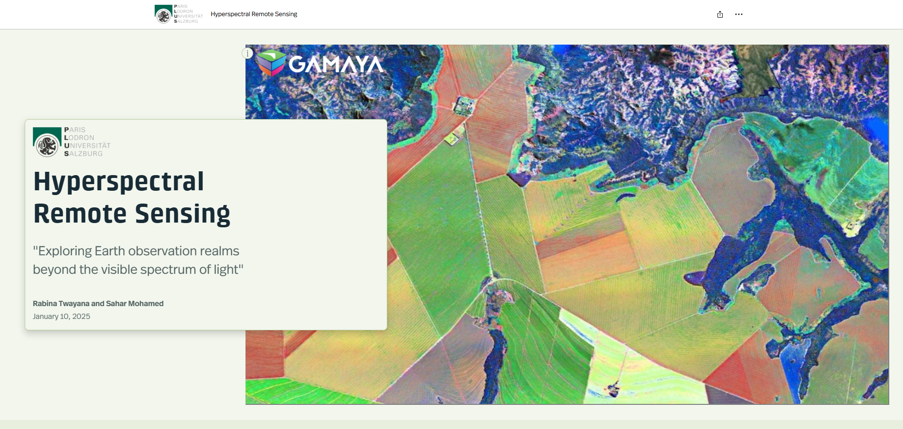

Course: GeoHumanitarian Action
Interactive StoryMap combining narrative, spatial analysis and Earth Observation to explain how geospatial methods support humanitarian crisis response — from needs assessment through to decision-making.
